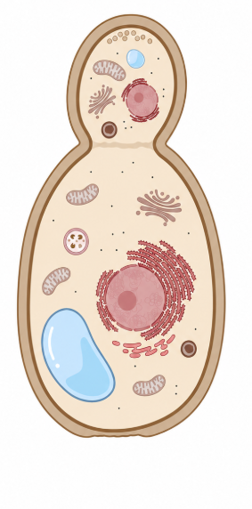

Chapter 4: Antifungals

Antifungals are a class of drugs that treat infections caused by all different kinds of fungi. There are three recognized types of antifungals: azoles, polyenes, and echinocandins.
All fungi are multicellular, meaning they are more complex than other forms of microbes and require stronger treatments. This is shown by the mechanisms by which antifungals must kill fungi, which attack large, crucial parts of the cell body.
Azoles and polyenes both attack the membrane of fungal cells, stopping growth and even damaging the membrane so far in some cases that it completely breaks, releasing its contents outside the cell. Echinocandins instead attack the cell's wall, yet the effects are similar, killing off the fungus.